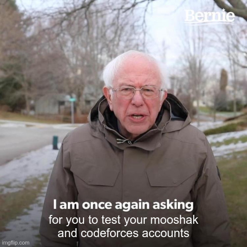

Week #01
Introduction to the course & first problems · Problems: Weekly Problems #01
Main learning outcomes for this week
- Course Overview:
- I know how evaluation is going to be made
- I understand how a typical week will going to be (theoretical exposition + pratical time + discord)
- I know that it is expected that I work outside of the class scheduled time and that there will be a heavy implementantion component
- I understand that I have many resources available at the webpage at that I can get request individual tutoring from the professor
😁 free time!

- Online Judges:
- I know what an online judge is and what is it for
- I have checked my student email to get my Mooshak credentials
- I have created my CodeForces account and sent my username to the professor
- I made at least one submission on Mooshak and one on Codeforces to understand how it works
😁 submit...

- A first challenge:
- Here is a challenging and different problem for you to think about: Prisoner Challenge (a problem from IOI 2022)
- The challenge is "up for grabs" until the end of October
- You can submit this problem on Codeforces (only in C++)
- You can and you should keep me in the loop as you trying this problem and improving your score
- The first student to solve it for 100 points (or the one with the best score on the end of October) will receive a secret prize (a real contest item)
- You are supposed to try to solve by yourself (and not look directly "elsewhere" for solutions); I might want to verify and chat with you about how you reached the solutions before awarding the prize
- Have fun trying to solve it and gain good honest "competitive programming prestige points" 🏅
😁 respect...

Content by Pedro Ribeiro (DCC/FCUP), migrated from www.dcc.fc.up.pt/~pribeiro/aulas/pc2627/week01.html to demonstrate the UC Design Kit.